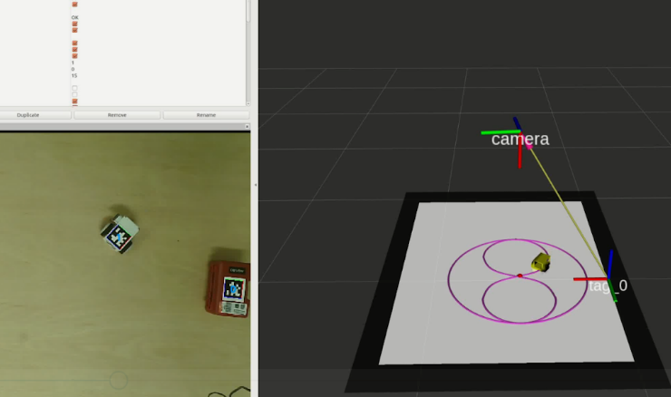
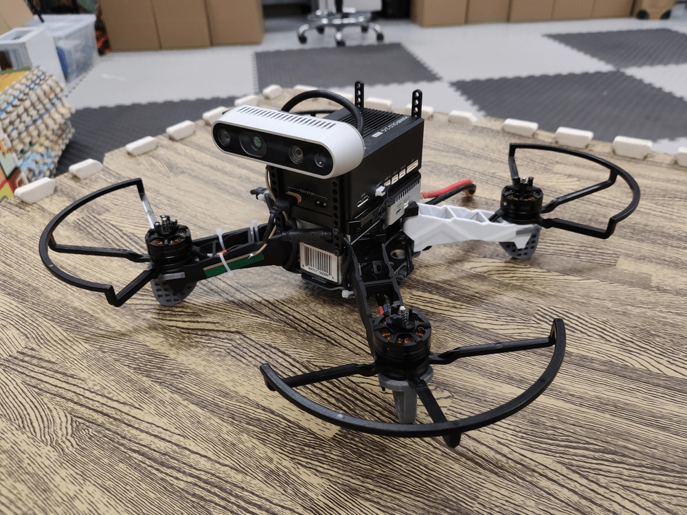
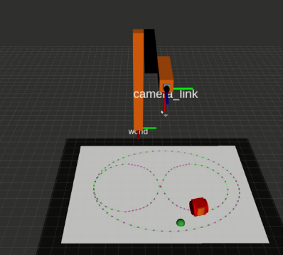
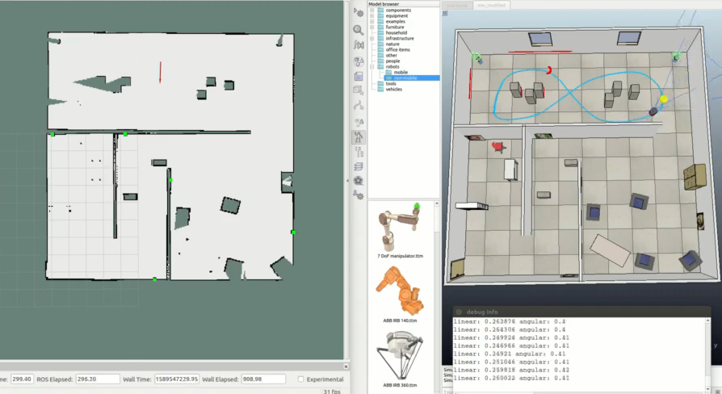
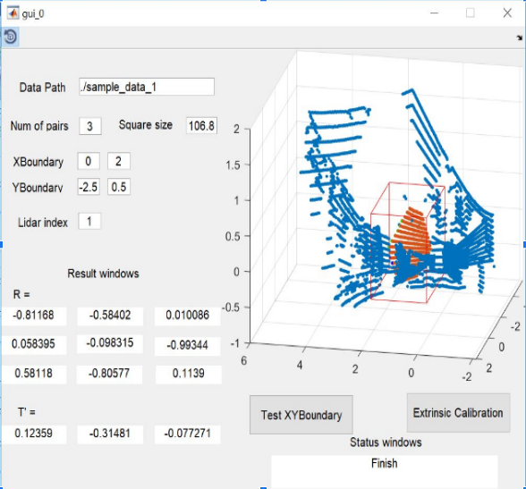

|
I am a second-year PhD student in HKUST working with Prof. Ling Shi. I obtained MPhil degree at HKUST in August 2021 and bachelor degree at PolyU in June 2019. From Oct 2021 to Aug 2022, I was a full-time C++ software engineer in Huawei Car BU. In the summer of 2018, I worked in Robot Perception Lab at CMU with Prof. Michael Kaess. Prior to that, I was a power electronics intern at ASM Pacific Technology. My research interests lie at control, optimization and robotics. Currently, I am working on numerical methods for trajectory optimization and geometrical optimal control. Slelected works are listed in Publications and Projects. In my spare time, there is nothing better than running in Victoria Harbour, hiking in MacLehose Trail and doing water sports in Clear Water Bay. Paper I read recently can be found in Reading Records. Email / CV / Linkedin / Github / Reading Records |
|
Hong Kong University of Science and Technology, HK
Hong Kong University of Science and Technology, HK
Hong Kong Polytechnic University, HK |
Noah's Ark Lab, Huawei, HK
Huawei Car Bu, Shanghai
ASM Pacific Technology, HK RISS Summer Scholar • Jun. 2018 to Aug. 2018 |
Publications
Manuscripts
[1] Log-Barrier Search for Structural Linear Quadratic Regulators
Nachuan Yang, Yuzhe Li, Jiawei Tang, Guodong Shi, Ling Shi
Submitted to IEEE Transactions on Automatic Control
Journal Papers
[2] Event-triggered Sensor Scheduling for Remote State Estimation with Error-Detecting Code
Yuxing Zhong, Jiawei Tang, Nachuan Yang, Dawei Shi, Ling Shi
IEEE Control Systems Letters (L-CSS), 2023，[paper]
[1] Linear Quadratic Control of Positive Systems: A Projection-Based Approach
Nachuan Yang, Jiawei Tang, Yik Ben Wong, Yuzhe Li, Ling Shi
IEEE Transactions on Automatic Control, 2022， [paper]
Conference Papers
[3] Motion Planning for Mobile Robots with Noise: A Probabilistic MPC Approach
Jiawei Tang, Yik Ben Wong, Zhengyu Fu, Nachuan Yang, Sil Kwong Tse, Winnie Suk Wai Leung, Ling Shi
13th IEEE Asian Control Conference, 2022，[pdf][demo]
[2] LQR Design for Discrete-Time Positive Systems: A First-Order Method
Nachuan Yang, Jiawei Tang, Yuzhe Li, Ling Shi
61st IEEE Conference on Decision and Control, 2022，[paper]
[1] Relative State Formation-based Warehouse Multi-robot Collaborative Parcel Moving
Sil Kwong Tse, Yik Ben Wong, Jiawei Tang, Peihu Duan, Suk Wai Winnie Leung, Ling Shi
4th IEEE Industrial Cyber-Physical Systems, 2021， [paper] [demo]
|
|
|  |
Jiawei Tang*, Sil Kwong Tse*, Yik Ben Wong* We built a physical multi-robot testbed and a ROS-based simulation platform from scratch. We demonstrated various control algorithms, including formation control, path planning with MPC, cooperative control, extended Kalman filter, and so on. |
|  |
Jiawei Tang An integrated project on a quadrotor, where I implemented optimal path planner, optimization-based trajectory generator and two-loop PID controller for control and planning, optical flow based visual odometry with a stereo camera, and extended Kalman filter for state estimation and sensor fusion. [code] |
|  |
Jiawei Tang I implemented a learning-based position control algorithm for fun. The pipeline is based on Tai's IROS 2017. I implemented a Pytorch version and trained it for 1500 episodes in Gazebo simulation. The controller works but the performance...... [code] |
|  |
Jiawei Tang The final project of Robotic Perception and Learning (ELEC5670 & COMP5223) @ HKUST. Tasks include mobile robot control, SLAM, image recognition and localization, ball tracking with camera. [code] [demo] |
|
|
Jiawei Tang In my final-year project, I solved the low-resolution face recognition problem by considering the difference between high-resolution and low-resolution features. Meanwhile, I developed an online face verification demo page for this FYP based on Flask, HTML, javascript and CSS. [code] [poster] [demo] |
|  |
Jiawei Tang During my internship at RI, CMU. I developed A Matlab Extrinsic Calibration system of a camera and a 3D LiDAR using line and plane correspondences. [poster] [RISS paper] [demo] |
©2023, Jiawei Tang

|
|